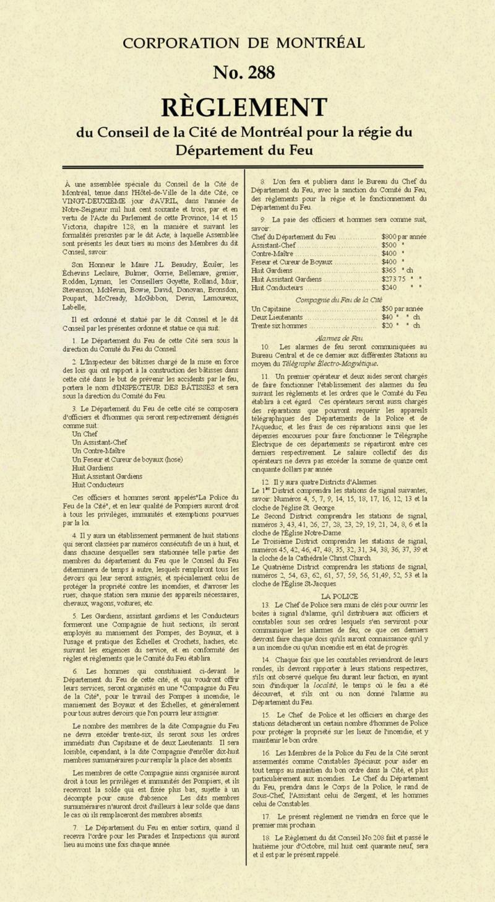
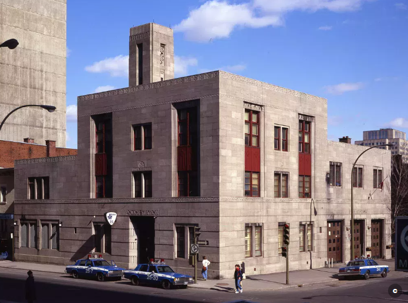

The back lane that became Rue de la Police — detail from 1880 atlas
Part One
Why does a back lane
have a name?
Every Monday this semester, I walk the same route. Out of the John Molson School of Business, south down Guy Street, towards Sainte-Catherine.
There's a moment on that walk where you cross a back lane. Unlike most back lanes in Montreal, this one has a proper street sign.
It reads: "Rue de la Police."
There is no police station anywhere near this lane. There hasn't been one in living memory. So why does a narrow service lane carry this name?

Rue de la Police — the lane that outlived the building it was named for
Ville de Montréal — Toponymie
Date de désignation: 10 avril 1876
Origine et signification:
La Cité de Montréal forme son premier comité de police en 1840 et son Département du feu en 1863. Pour ces services, on construit des édifices particuliers, et avec les années, on prend l'habitude de loger sous un même toit le poste de police et la caserne de pompier. En 1875, l'architecte Henri-Maurice Perrault construit le poste no 10, derrière lequel on ouvre une étroite voie de service. Cette voie devient la rue de la Police et conserve cette dénomination après la démolition du poste, en 1931.
montreal.ca/toponymie/toponymes/rue-de-la-police
Part Two
The city gives an answer
The Ville de Montréal toponymy database records that "Rue de la Police" was officially designated on April 10, 1876.
In 1875, architect Henri-Maurice Perrault built Station No. 10 — a combined police and fire station — and behind it, a narrow service lane was opened. That lane became Rue de la Police.
The station was demolished in 1931. The lane kept its name.
The name is a fossil — a trace of something that no longer exists, embedded in the geography of the city.

Henri-Maurice Perrault (1828–1903) — architect of the original Caserne 10, 1875

Règlement No. 288 — Corporation de Montréal, pour la régie du Département du Feu. Source: sim.montreal.ca/media/reglement-288.

Chief Alexander Bertram — Canada's first professional fire chief, 1863. Service de sécurité incendie de Montréal.
Part Three
The first Caserne 10
1875–1931
The Montreal Fire Department was formally established as a professional, paid service on May 1, 1863, under Chief Alexander Bertram — Canada's first.
The catalyst was catastrophe. The Great Fire of 1852 left ten thousand people homeless and destroyed nearly half the city's housing. After that, the city professionalized: paid firefighters, steam engines, an alarm telegraph system, and purpose-built stations.
Caserne 10 was one of these stations. Built in 1875 by Perrault as a combined police and fire hall, it served through the era of horse-drawn apparatus, gas lighting, and wooden interiors.

Montréal (Québec). Service des affaires institutionnelles (1992–1994). Caserne de pompiers no. 10 (789, rue Sainte-Catherine Ouest). Numéro original de la pièce: Z-419.

Atlas, c. 1890, Goad Atlas, Showing a mixed fabric: residences alongside light industry and textile warehouses
Part Four
The neighbourhood
transforms
Fire insurance atlases — the primary tool of this research — reveal the neighbourhood evolving around the station over four decades.
In 1890, the Goad Atlas shows a mixed fabric: residences alongside light industry and textile warehouses. By the 1912 edition, Sainte-Catherine had intensified dramatically — more commercial buildings, denser development, higher fire risk.
The station was increasingly surrounded by exactly the kind of urban fabric that needed it most. And one block south, on Guy Street, stood one of the largest institutional buildings in Montreal.

Créateur : Chas. E. Goad Co., Underwriters' Survey Bureau. Éditeur : Montreal [etc.] :Chas. E. Goad Co., 1915.

ASGM L082_7Y4A Maison mère, extérieur, s.d.
Part Five
One block away
the Grey Nuns
Less than two blocks from Caserne 10 sat the Motherhouse of the Grey Nuns — one of the largest institutional complexes in Montreal.
By 1918, it housed several hundred nuns, elderly residents, a military convalescent hospital with nearly 285 wounded soldiers from the First World War — and on the top floor of the west wing, a crèche.
Roughly 170 infants slept there. Most were foundlings — abandoned children left on the convent doorstep. Some were only a few days old. None were older than about two and a half years.

ASGM L082_7Y13C Maison mère, entrée de la rue Guy, s.d.

Postcard of the Motherhouse on fire in 1918. Courtesy BAnQ.
Part Six
Valentine's Day
1918
The fire broke out between seven-thirty and seven-fifty in the evening, on the top floor of the west wing. The babies had been put to bed hours earlier.
Flames caught a curtain near a window and spread through the wooden interior with terrifying speed. Smoke filtered down through the floorboards into the military hospital below.
Eighteen fire stations ultimately responded. Caserne 10, barely a block away, was almost certainly the first.
The Alarm Sequence — Le Canada, Feb. 15, 1918
7:50 PM
Private alarm No. 419 sounds from the Grey Nuns
7:51 PM
Second alarm — calls the second section of the brigade
8:07 PM
Third alarm — calls the reserve. The entire brigade mobilized.
10:30 PM
Firefighters report 38 small bodies recovered. The count will rise.

Montreal fire apparatus, c. 1926 — Archives de Montréal, ref. Z-419. Similar equipment to what responded to the Grey Nuns fire.
Part Seven
Into the flames
Sub-Chief Marin — the district chief — was among the first firefighters on scene. He and his men pushed into the burning dormitory and seized children from their cribs, Marin carrying four at a time.
Nuns rushed in alongside them. Sister Côté made four separate trips, saving twelve babies on her first three trips, four more on her last. Two or three nuns collapsed from smoke inhalation and had to be carried out by firefighters.
Then a sudden gust of flame burst from the central tower. The dormitory became unsurvivable. Marin gave the order: no more rescue attempts.
Le dortoir était comme une fournaise ardente.
The dormitory was a burning furnace. — La Patrie, Feb. 21, 1918

Hose wagon, c. 1926 — Archives de Montréal, ref. Z-441. Water pressure during the Grey Nuns fire was weak; steam pumps had to be set up at considerable distance.

Service de sécurité incendie de Montréal — sim.montreal.ca/en/node/553
Part Nine
Every newspaper in 1918
attributed the fire to an
electrical short circuit.
It was arson.
The fire was set deliberately by Berthe Courtemanche, a nursery worker hired only six weeks before. She was tried, found unfit to stand trial, and transferred to Hôpital Saint-Jean-de-Dieu — a psychiatric institution — where she died roughly ten years later.
Her name does not appear in any of the February 1918 newspaper accounts.

Service de sécurité incendie de Montréal — sim.montreal.ca/en/node/553

The move to the new address — relocation of Caserne 10, 1931
Part Ten
The second
Caserne 10
Thirteen years after the fire, the original station was demolished and replaced. The new building was designed by Harold E. Shorey and S. Douglas Ritchie, two of Montreal's most accomplished Art Deco architects.
Their partnership, formed in 1922, produced some of the most distinctive modernist buildings in the city — including the Simon Kirsh House, the Provincial Transport Co. Bus Terminal on Dorchester Street, and the First Church of Christ Scientist addition. Ritchie, born in Trois-Rivières, was a prodigious talent who won national architectural prizes by the age of eighteen.
Caserne 10 was built in 1931 as part of Mayor Camillien Houde's Depression-era public works program — one of twenty Art Deco civic buildings commissioned to provide employment.
Its restrained limestone facade features a relief depicting symbols of Montreal: ships, a church dome, and an Art Deco skyscraper.
It won first prize from the Royal Architectural Institute of Canada in the public building category.

Mayor Camillien Houde (1889–1958) — commissioned twenty Art Deco civic buildings during the Depression as a public works employment program.

Caserne 10. Photo: Sandra Cohen‑Rose, Montréal, an Art Deco Capital — Tourisme Montréal.
Part Eleven
Caserne 10
today
The station at 1445 rue Saint-Mathieu is still in active service — one hundred and fifty years of continuous fire protection at essentially the same location, through two buildings and two centuries.
Inside, a memorial plaque honours the fallen firefighters of Montreal. The institutional memory of the building connects the horse-drawn era of the original station to the motorized present.
The Art Deco tower, the limestone reliefs, the wide vehicle bays built for motorized apparatus — all of it still in daily use, still serving the neighbourhood that Perrault's original station was built to protect in 1875.

Memorial plaque, Caserne 10 — "Nous, pompiers de Montréal, désirons graver à jamais les noms de nos confrères qui ont perdu la vie dans l'exercice de leurs fonctions."
Montréal (Québec). Service des affaires institutionnelles (1992–1994). Caserne de pompiers no. 10 (789, rue Sainte-Catherine Ouest). Numéro original de la pièce: Z-419.
Part Twelve
What a street name
remembers
Rue de la Police remembers a building — a combined police and fire station that stood on Sainte-Catherine from 1875 to 1931. The building is gone. The lane that served it survives, still carrying a name from 1876.
But follow that name — through the toponymy database, through the fire insurance atlases, through the newspapers at BAnQ — and you find the firefighters who lived in that building, the district chief who carried children from a burning dormitory, the sixty infants who died one block away, and a woman whose name didn't appear in any newspaper until the ash had cooled.
The street name is a fossil.
But fossils, if you know how to read them,
contain entire worlds.

Rue de la Police — a back lane with a name
Primary Sources — Newspapers
Le Devoir, 15 février 1918
Le Canada, 15 février 1918
Le Canada, 16 février 1918
La Patrie, 15 février 1918
La Patrie, 18 février 1918
La Patrie (hebdomadaire), 21 février 1918
Montreal Weekly Witness, 19 February 1918
L'Étoile du Nord, 21 février 1918
Montreal Gazette, [fragment]
Primary Sources — Cartographic
Hopkins Atlas, 1879 — BAnQ ark:/52327/2246931
Goad Atlas, 1890 — BAnQ ark:/52327/2244212
Goad Atlas, 1912–14 — BAnQ ark:/52327/2246836
Sources & Acknowledgments
HIST 306: Montreal Public History
Professor VK Preston
Concordia University, Winter 2026
All newspaper translations from the original French by the author.
Photographs by the author unless otherwise noted.
Archival images courtesy of the Archives de Montréal and BAnQ.
Secondary Sources
Osborne, Brian S. "Montreal's Fire Stations." JSSAC 35, no. 2 (2010): 21–46.
Redfern, Bruce D. "The Montreal Fire Department in the Nineteenth Century." MA thesis, Concordia University, 1993.
McRobie, William Orme. Fighting the Flames! Montreal: "Witness" Printing House, 1881.
Ville de Montréal. "Rue de la Police." Toponymie de Montréal.
Archival Collections
Archives de Montréal — refs. Z-419, Z-441, Z-447
BAnQ Numérique — newspaper archives
Ville de Montréal Toponymie database